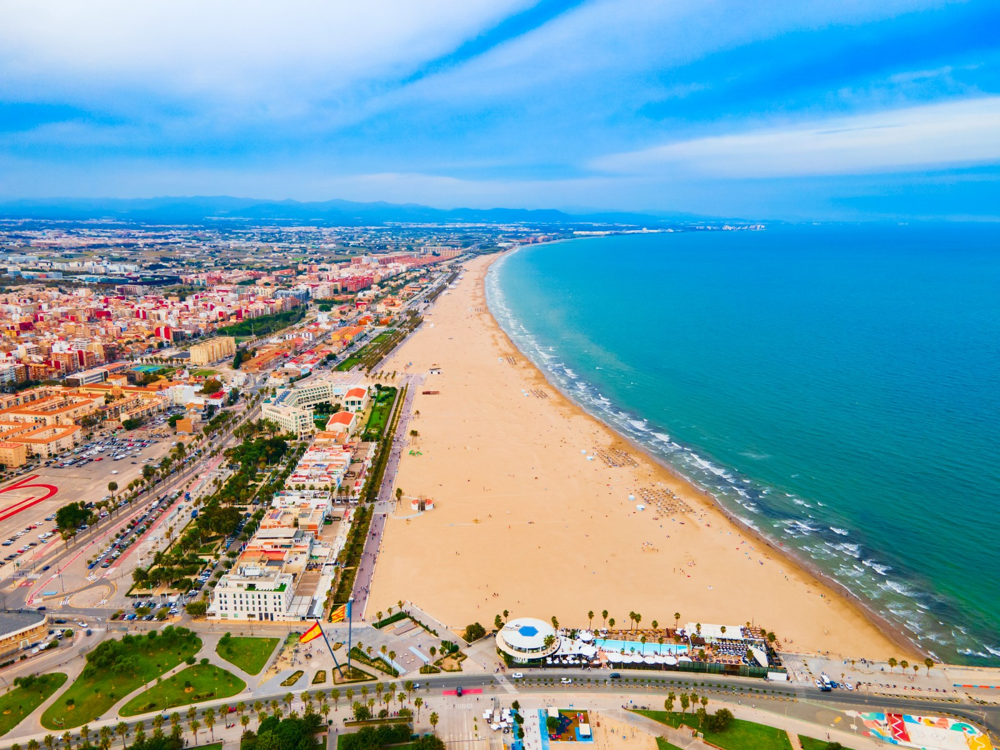

Nei giorni che hanno preceduto il 29 ottobre 2024, l’Agencia Estatal de Meteorología (AEMET) aveva iniziato a lanciare avvisi crescenti circa una possibile tempesta di eccezionale intensità. Le previsioni indicavano chiaramente la formazione di una DANA (Depresión Aislada en Niveles Altos), un fenomeno meteorologico noto per provocare piogge estreme in un breve lasso di tempo. Nonostante la gravità dell’allerta, la risposta delle autorità locali si è dimostrata lenta e inadeguata. Le istituzioni si sono limitate a monitorare la situazione senza adottare misure preventive come la chiusura preventiva delle scuole, la sospensione dei trasporti o l’evacuazione delle aree a rischio.

L'allerta ufficiale rivolta alla popolazione è arrivata solamente in tarda serata, quando ormai l’emergenza era già in atto e i margini di intervento si erano drasticamente ridotti. Questa mancanza di reattività ha generato forti critiche da parte dei cittadini e degli esperti di protezione civile, che hanno sottolineato la sottovalutazione dei segnali premonitori. In molte aree, le persone non erano preparate alla violenza dell’evento meteorologico, e ciò ha contribuito ad aumentare il numero di emergenze da gestire nel momento critico, rendendo più difficile l'intervento tempestivo dei soccorritori.
